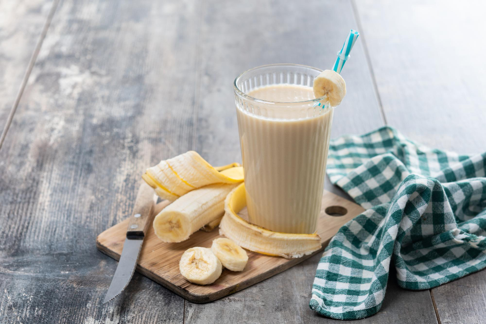

Breakfast, lunch, dessert, or snack time, any time's the right time for this delicious banana smoothie. With hundreds of ratings and reviews from our Allrecipes community, this easy banana smoothie recipe with peanut butter is an easy favorite, and it's ready in less than 5 minutes.
You'll find the full recipe with ingredients and amounts below, but this is how easy it is to make a banana smoothie: Simply toss a handful of ingredients (bananas, milk, peanut butter, honey, and ice cubes) into a blender and give them a whirl.